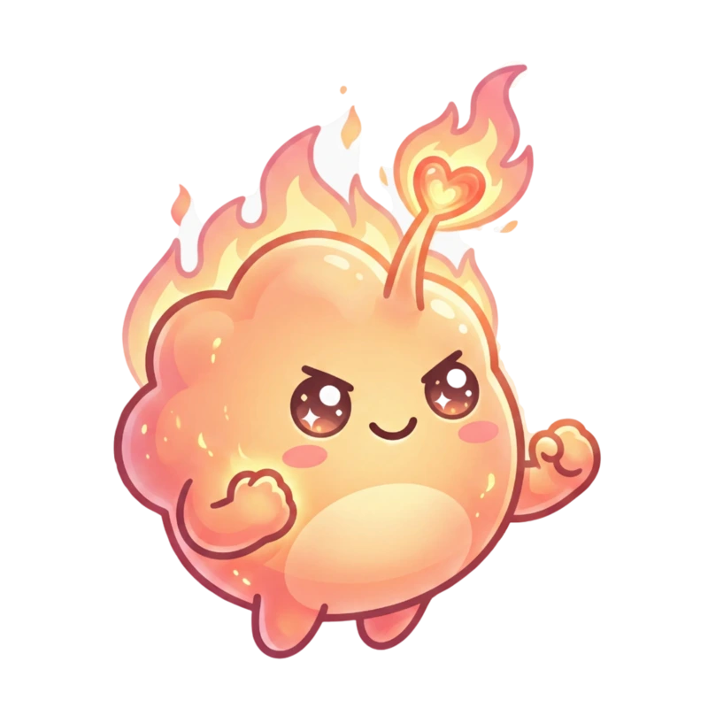

Materi yang mudah dipahami
Bekal belajar yang disusun agar kamu dapat membangun pemahaman dengan lebih nyaman.
Scyra hadir untuk membantu setiap pejuang UTBK menemukan arah belajar yang sesuai dengan waktu, kebutuhan, dan kemampuannya.

Tidak semua pelajar memiliki kesempatan belajar yang sama.
Ada yang ingin mempersiapkan UTBK, tetapi waktunya terbatas untuk mengikuti jadwal bimbingan belajar. Ada yang ingin belajar lebih serius, tetapi terhalang biaya.
Ada pula yang memilih belajar mandiri, tetapi sering bingung harus mulai dari mana, materi apa yang perlu dipelajari, dan bagaimana mengetahui perkembangannya.
Scyra bukan bimbingan belajar, melainkan platform belajar mandiri yang membantu pelajar belajar dengan waktunya sendiri, sesuai kebutuhan dan kemampuan masing-masing.
Bekal belajar yang disusun agar kamu dapat membangun pemahaman dengan lebih nyaman.
Belajar terasa lebih hidup melalui pengalaman yang mendorongmu untuk terus terlibat.
Latihan soal terstruktur dan simulasi ujian untuk membantumu mengenali langkah berikutnya.
Analisis perkembangan agar setiap usaha kecilmu dapat terlihat dan terus bertumbuh.
Scyra tidak menjanjikan jalan instan menuju kampus impian. Namun, Scyra ingin memastikan bahwa setiap pelajar tetap memiliki ruang untuk belajar, bertumbuh, dan memperjuangkan masa depannya.
Untuk setiap langkah yang kamu pilih
Scyra hadir untuk menemani prosesmu—pelan, konsisten, dan penuh harapan.
Mulai Perjalananmu →